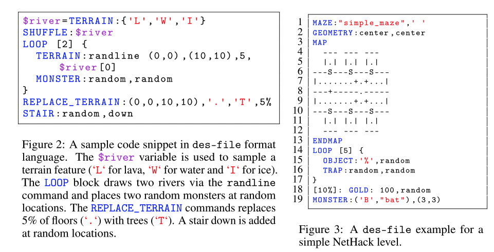
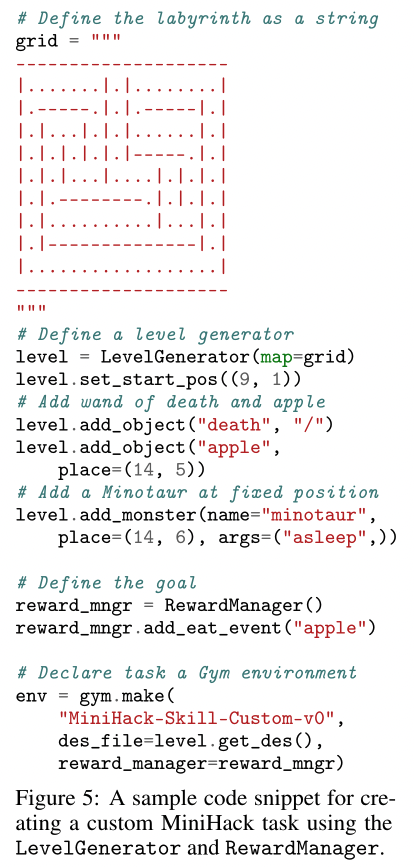
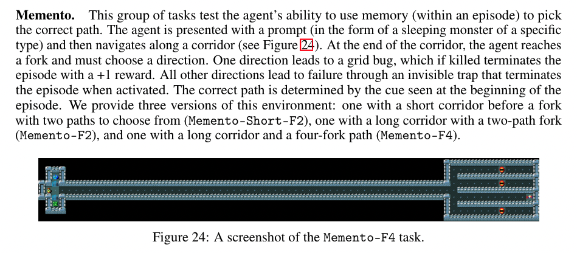
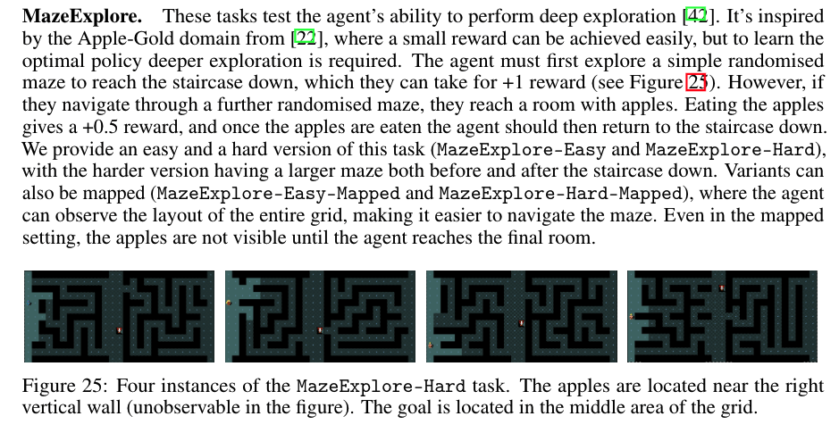
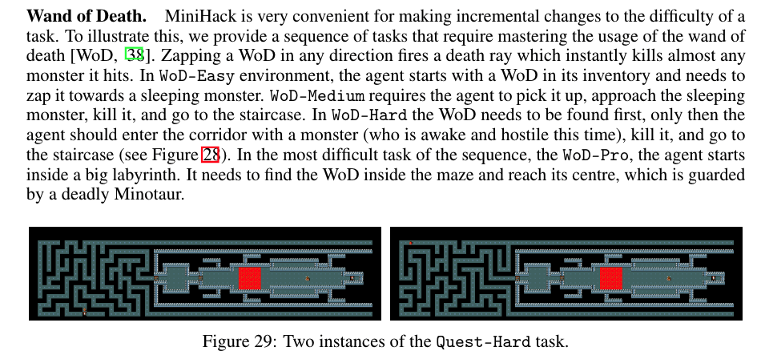

[TOC]
- Title: MiniHack the Planet: A Sandbox for Open-Ended Reinforcement Learning Research
- Author: Mikayel Samvelyan et. al.
- Publish Year: Nov 2021
- Review Date: Mar 2022
Summary of paper
They presented MiniHack, an easy-to-use framework for creating rich and varied RL environments, as well as a suite of tasks developed using this framework. Built upon NLE and the des-file format, MiniHack enables the use of rich entities and dynamics from the game of NetHack to create a large variety of RL environments for targeted experimentation, while also allowing painless scaling-up of the difficulty of existing environments. MiniHack’s environments are procedurally generated by default, ensuring the evaluation of systematic generalization of RL agents.
Limitation of existing RL benchmark
- benchmarks that are widely adopted by the community are not explicitly designed for evaluating specific capabilities of RL methods.
- lack the ability to test specific components or open problems of RL methods in well-controlled proof-of-concept test cases
- Systematically extending such environments and gradually dropping simplifying assumptions can require arduous engineering and excessive time commitment, while opting for more challenging benchmarks
des-file
The des-file format is a domain-specific language created by the developers of NetHack for describing the levels of the game. des-files are human-readable specifications of levels: distributions of grid layouts together with monsters, objects on the floor, environment features (e.g.walls, water, lava), etc.

Python operation
we can also use python code to construct the environment

Types of tasks
Navigation tasks
MiniHack’s navigation tasks challenge the agent to reach the goal position by overcoming various difficulties on their way, such as fighting monsters in corridors, crossing a river by pushing boulders into it, navigating through complex or procedurally generated mazes.


Skill Acquisition Tasks
The nature of commands in NetHack requires the agent to perform a sequence of actions so that the initial action, which is meant for interaction with an object, has an effect. The exact sequence of subsequent can be inferred by the in-game message bar prompts.
For example, when located in the same grid with an apple lying on the floor, choosing the Eat action will not be enough for the agentto eat it. In this case, the message bar will ask the following question: “There is an apple here; eat it? [y n q] (n)”. Choosing the Y action at the next time step will cause the initial EAT action to take effect, and the agent will eat the apple. Choosing the N action (or MORE action since N is the default choice) will decline the previous EAT action prompt. The rest of the actions will not progress the in-game timer and the agent will stay in the same state. We refer to this skill as Confirmation.
